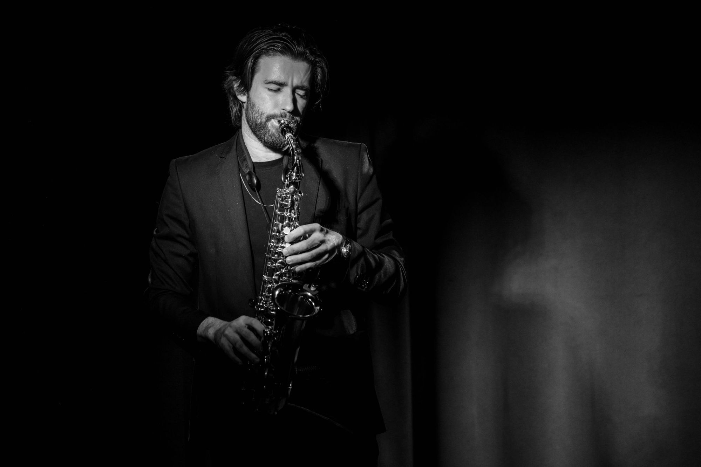
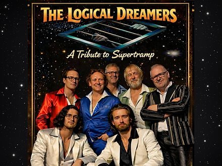
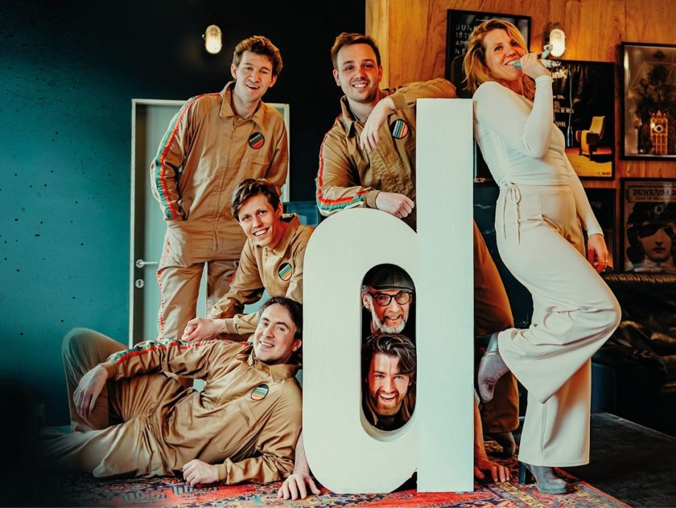
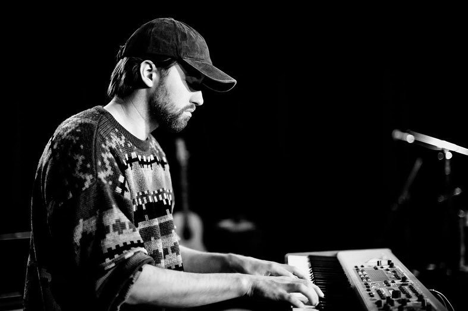

Homemade ballads
Undecided Souls
Een Gents duo dat met piano, gitaar en zang Engelstalige muziek maakt over wat vanbinnen speelt maar zelden gezegd wordt.
Bekijk video
kom gerust luisteren!
Er staan nog geen nieuwe optredens gepland.
Nieuwe data verschijnen hier zodra ze vastliggen.
elk met een eigen sound en een ander karakter
Homemade ballads
Een Gents duo dat met piano, gitaar en zang Engelstalige muziek maakt over wat vanbinnen speelt maar zelden gezegd wordt.
Bekijk video
A tribute to Supertramp
Een muzikale én visuele tribute die je volledig onderdompelt in de wereld van Supertramp.
Bekijk video
Funk party band
Een zevenkoppige liveband met een stevige groove en invloeden uit funk, rock, soul en reggae.
Bekijk video
Saxofoon en piano
Ik maak muziek sinds mijn zestiende. Ik begon op piano, later kwam de saxofoon erbij. Naast mijn bands geef ik ook met veel plezier saxofoon- en pianoles. Ook op bandkampen geef ik les.
Saxofoonles in Gent